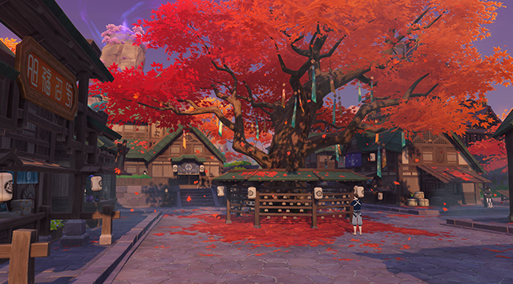

Ritou:
To properly explore the realm of the Shogun during this time of the Sakoku Decree, you must first pass the
checkpoint in Ritou.
Ritou is under the jurisdiction of the Kanjou Commission and people need various documents to be granted
passage. However, to get the necessary Travel Permit, you have to go through a very complicated procedure and
have the right connections.
Without the Travel Permit, you can only stop briefly in Ritou. You will see other outlanders who are also stuck
there, together looking out upon the desolate landscape of the fishing village with red maples and green roof
tiles.

Inazuma City:
Inazuma's most lively and prosperous area, where most of Inazuma's population lives. From Hanamizaka to the
streets of the city, you can follow the trail to visit local traditional shops and sample Inazuma specialties.
The Tenryou Commission is also located in the city, governing matters concerning public order and security, as
well as the Shogunate's military affairs.
At the top of Inazuma City is Tenshukaku, where the Raiden Shogun resides and rules over Inazuma.

Chinju Forest:
A tranquil and mysterious forest located at the foot of Mt. Yougou.
Here one can find Tanuki statues everywhere, torii gates scattered throughout the forest, and abandoned shrines
hidden in the depths... Like a flowing river, they tell of legends meandering into a forgotten past.
Rumor has it that when walking in Chinju Forest, you may encounter mysterious beings who like to play pranks...

Grand Narukami Shrine:
The largest shrine in Inazuma, located at the peak of Mt. Yougou. It is dedicated to Her Excellency, the
Almighty Narukami Ogosho.
For those who have wishes, they can climb to the top of the mountain one step at a time. For those who have
gained the favor of Electro, they can use the Thunder Spheres to fly up and reach the shrine surrounded by the
huge Sacred Sakura Tree. The Sacred Sakura is in constant bloom, symbolizing the eternity of Narukami.
After passing through the many torii gates, find the shrine maiden to draw a fortune slip and ask for Narukami's
blessing.

Tatarasuna, Kannazuka:
Legend has it that Kannazuka means "the hill where no gods reside." Until now, Kannazuka is disputed territory
between the Shogunate and Sangonomiya.
Kannazuka has a mountainous terrain with high steep cliffs. In the midst of the rocky outcrops lies Mikage
Furnace, the largest smelting facility in Inazuma. This is where Jade Steel is made, a rare material that is
used in Inazuma to forge swords.

Serpent's Head:
Of the giant serpent that was defeated by the Electro Archon with the Musou no Hitotachi, only its
weather-bleached remains are left today. Although its skull still looks up at the sky defiantly, the god is
already dead, and so the name of "Watatsumi Omikami" is gradually being forgotten.
Even if the giant serpent is long dead, you can still clearly feel the traces of its power left behind. Under
the influence of the Tatarigami, Yashiori Island has been deserted by its inhabitants. What can be seen on the
island are just endless rain and thunderstorms trying to wash away the remnants of the past.